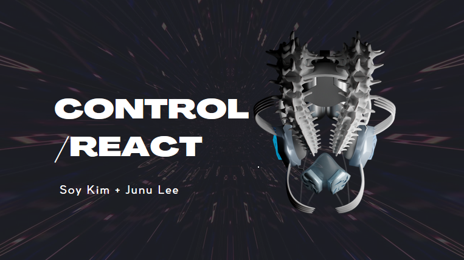
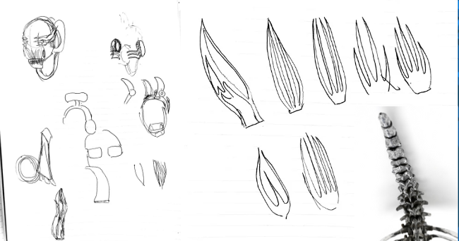
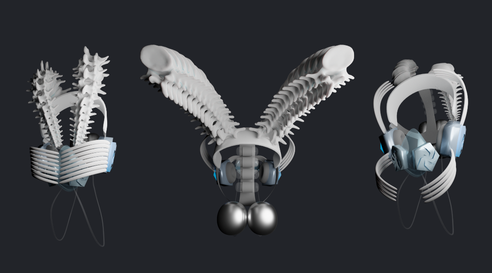

Control React
The concept mask is designed to challenge the user's control and agency by forcing them to react in a certain way, and to reflect on their behavior and reactions to certain situations. The mask stimulates certain reactions and emotions, creating an immersive experience that pushes the user to confront their responses to the game. Through this design, the mask challenges the user's control literacy and procedural rhetoric, encouraging them to think critically about the relationship between their actions and their reactions. The user's engagement with the mask's interface enables them to experience a game feel that is both immersive and uncomfortable, provoking them to reflect on their own behavior while using it. Ultimately, the mask serves as a provocative example of how a controller can be designed to engage players in new and challenging ways, forcing them to confront their reactions and reflect on their own behavior. In this way, the mask highlights the importance of self-awareness and critical thinking in gaming, encouraging players to be more mindful and intentional in their approach to gameplay.
  